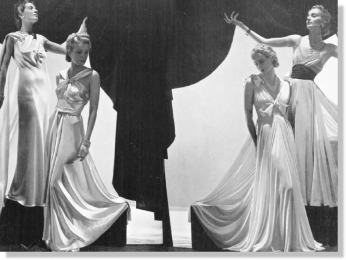
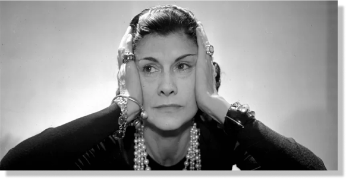
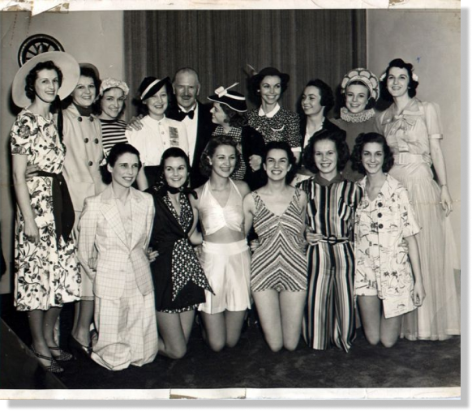

A história dos desfiles de moda começou na década de 1860, quando o designer de moda inglês Charles Frederick Worth usou modelos em vez de manequins para apresentar suas criações em Paris.

Anos 20 e 30
Nas décadas de 1920 e de 1930, os desfiles se transformaram em eventos menores e mais individualizados: cada casa de moda apresentava suas coleções em uma série de modelos, em eventos exclusivamente para clientes, dando origem ao formato de desfiles que conhecemos atualmente.os desfiles de moda continuam a desempenhar um papel crucial na indústria, não apenas revelando as últimas tendências.
Personalidades
Paris havia se tornado uma estufa de talentos: da facilidade discreta de Coco Chanel aos experimentos surreais de Elsa Schiaparelli, incluindo os plissados de Madeleine Vionnet.As contribuições inovadoras dessas renomadas estilistas não só influenciaram o cenário fashion da época, mas também deixaram um legado duradouro, inspirando gerações futuras de designers a explorar novas fronteiras da expressão artística na moda.


Era da Grande Depressão
A Era da Grande Depressão, que começou no final da década de 1920 e perdurou até meados da década de 1930, teve um impacto profundo em várias áreas da sociedade, incluindo a moda.A moda durante a Grande Depressão refletiu as duras realidades econômicas da época. A austeridade, a simplicidade e a busca por soluções práticas foram características proeminentes. O período também viu uma mudança em direção à produção caseira de roupas e à reutilização de peças existentes, destacando a resiliência e a criatividade das pessoas diante das dificuldades econômicas.
Comentários
Gabriel Silva
há 20 minutos atrás
Nossa vocês viram como era no começo? Da pra perceber a diferença dos dias atuais para antigamente, até a originalidade das peças. Qual foi o seu desfile favorito até agora?
Gabriela Vitória
há 10 minutos atrás
Sim, os desfiles foram incríveis! Acho que a mistura de texturas e cores no desfile de 98 foi fenomenal. E vocês, qual aspecto mais chamou a atenção?
Kauã Cruz
há 7 minutos atrás
Confesso que não sou fã da moda antiga, não chama tanto a minha atenção! Prefiro a moda atual
Gabriel Silva
Agora pouco
Pessoal, parece que os dos anos anteriores realmente estavam explorando novas áreas. Alguém mais notou algo diferente?
Comentários
Gabriel Silva
há 20 minutos atrásGabriela Vitória
há 10 minutos atrásKauã Cruz
há 7 minutos atrásGabriel Silva
Agora pouco